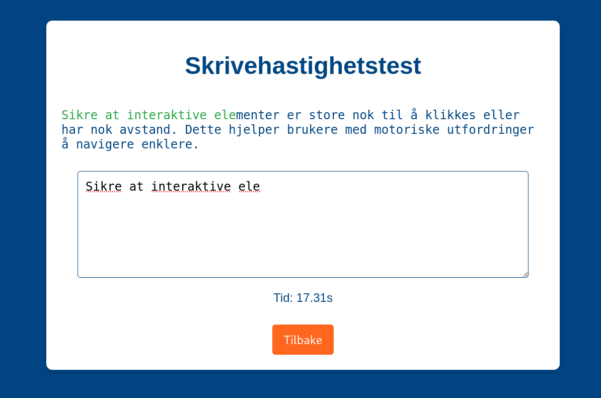

Carbonara – Klassisk italiensk rett med egg, parmesan,
pancetta og svart pepper.
Pasta Bolognese – Pasta med en rik kjøttsaus laget av
tomater, kjøttdeig og krydder.
Pasta Alfredo – Kremet saus med smør, fløte og parmesan,
ofte servert med kylling.
Pasta Pesto – Pasta med en frisk saus av basilikum,
hvitløk, pinjekjerner, parmesan og olivenolje.
Lasagne – Lagvis pastarett med kjøttsaus, béchamelsaus og
ost, bakt i ovnen.
Idégenerering - Målrettede ideer
Her er fem raske spørsmål for å hjelpe deg med å velge pastarett til
middag:
Vil du ha en kremet eller tomatbasert saus? (Kremet →
Carbonara, Alfredo / Tomat → Bolognese, Arrabbiata)
Vil du ha kjøtt, sjømat eller vegetarisk? (Kjøtt →
Bolognese, Carbonara / Sjømat → Frutti di Mare / Vegetarisk →
Pesto, Pasta alla Norma)
Foretrekker du en lett eller fyldig rett? (Lett → Aglio
e Olio, Pesto / Fyldig → Lasagne, Alfredo)
Har du lyst på en klassiker eller noe mer eksperimentelt? (Klassiker → Carbonara, Bolognese / Eksperimentelt →
Puttanesca, Gnocchi alla Sorrentina)
Hvor mye tid vil du bruke på matlagingen? (Raskt → Cacio
e Pepe, Aglio e Olio / Mer tid → Lasagne, Ravioli)
Idégenerering - Kategorier
Her er fem hovedtyper av pastaretter:
Pasta med kremet saus – F.eks. Carbonara eller Alfredo,
hvor sausen er basert på fløte, ost eller egg.
Pasta med tomatsaus – F.eks. Bolognese eller Arrabbiata,
der sausen er laget av tomater, urter og ofte kjøtt.
Bakte pastaretter – F.eks. Lasagne eller Pasta al Forno,
hvor pastaen tilberedes i ovnen med saus og ost.
Pasta med olje - eller smørsaus – F.eks. Aglio e Olio
eller Cacio e Pepe, hvor sausen er lett og basert på olivenolje
eller smør.
Fylte pastaretter – F.eks. Ravioli eller Tortellini,
hvor pastaen er fylt med kjøtt, ost eller grønnsaker.
Idégenerering - konsept
Idégenerering - POC / enkle scripts

Refleksjon
Refleksjon - spørsmål
Hvis du vil holde det kort og konsist, kan du stille deg selv disse
fem spørsmålene:
Hvilke nettlesere bruker målgruppen vår?
Hvilke nettlesere krever teknologien vår for å fungere optimalt?
Hvor mye ekstra arbeid krever støtte for eldre nettlesere?
Er det eksterne krav som påvirker nettleserstøtten?
Hvordan balanserer vi brukervennlighet, sikkerhet og ytelse?
Refleksjon - oppsummere
Idégenerering
– Bruker AI til å komme med mange ideer og kategorisere dem for
å oppdage nye perspektiver.
Visuell konseptualisering
– Genererer bilder for å utforske ideer visuelt.
Målrettet tenkning
– AI stiller spørsmål for å skjerpe idéutviklingen.
Refleksjon og oppsummering
– AI hjelper med refleksjonsspørsmål, oppsummerer tanker og
analyserer sentiment.
Refleksjon - sentiment
Teksten har en positiv og inspirerende tone. Her er en
sentimentanalyse basert på ulike aspekter:
Generell tone: Positiv, motiverende, og engasjerende. Den
presenterer en idé om en "alltid tilgjengelig sparringspartner"
på en måte som vekker nysgjerrighet.